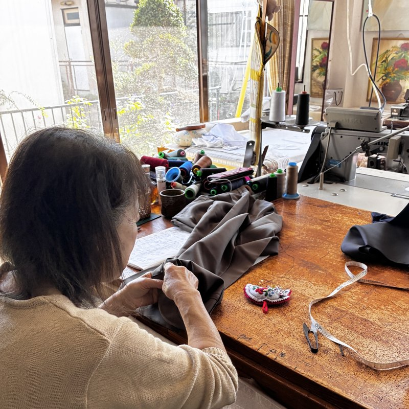
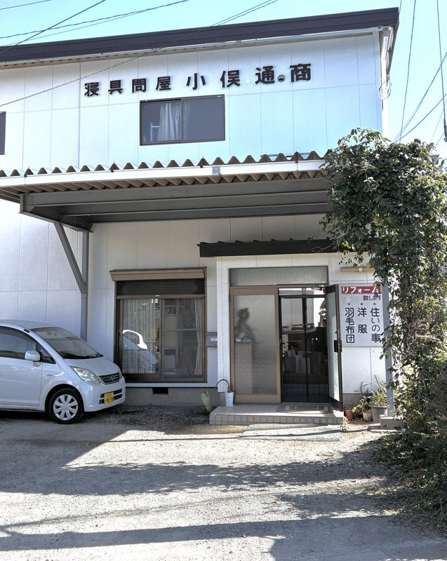

小俣通商
洋服のお直し・布団のリフォーム
山梨県都留市つる
0554-45-1356 お見積りは無料です。お気軽にお電話ください ✉ メールでお問い合わせ分からないことは、お電話でお気軽にどうぞ。営業時間外は、メールでお問い合わせください。
洋服のお直し・布団のリフォーム
山梨県都留市つる
0554-45-1356 お見積りは無料です。お気軽にお電話ください ✉ メールでお問い合わせ分からないことは、お電話でお気軽にどうぞ。営業時間外は、メールでお問い合わせください。

お使いの羽毛を取り出し、ふるいにかけて細かい羽根やホコリを取り除いて、新しい側生地にお仕立て直します。工場に出すのではなく、店で職人が仕立てていますので、お持ちいただければその場で中を確認してお見積りができます。
羽毛の水洗いは行っておりません。その分、お安く、早くお返しできます。洗浄をご希望の場合はご相談ください。
お預かりして中を確認し、羽の多い布団などリフォームに向かない場合は、正直にお伝えします。無理にはおすすめしません。
へたった布団の綿を打ち直し、側生地を新しくして仕立て直します。買い替えるより安く、使い慣れた布団をそのまま使い続けられます。
綿布団の料金は、お布団の状態と大きさによります。お持ちいただければその場でお見積りします。
サイズが合わなくなった服、傷んでしまった服を、着られる状態に戻します。お直しは、ご持ち込みでお受けしています。

生地や状態によって変わります。正確な金額はお持ちいただいてからお見積りします。
| 側生地 | シングル | ダブル |
|---|---|---|
| 綿100%・80番（上質） | 25,000円 | 37,000円 |
| 綿100%・60番（おすすめ） | 22,000円 | 33,000円 |
| テトロン（お手軽） | 19,000円 | 28,000円 |
| 足し羽毛（300gを超えた分） | 100gあたり 3,000円 | |
価格はすべて税込です。足し羽毛は300gまで料金に含みます。足さなくてよいお布団もあります。綿の生地は汗を吸うので、一年中お使いになるなら綿100%の60番をおすすめしています。テトロンは一番お手頃ですが、夏は少し暑く感じ、においが出ることがあります。
掛布団・敷布団・こたつ布団・座布団。お布団の状態と大きさによって変わりますので、お見積りします。
| 裾上げ（ズボン・ミシン） | 300円 |
|---|---|
| 裾上げ（ズボン・手上げ） | 1,000円 |
| 裾上げ（Tシャツ） | 900円 |
| 袖丈詰め | 2,000円 |
| ウエスト幅出し・幅つめ（学生スカート・プリーツスカート等） | 2,500円 |
| スラックスのウエスト幅出し | 2,000円 |
| ファスナー交換（スラックス・スカート） | 1,000円 |
| ファスナー交換（ワンピース） | 1,500円〜 |
| オープンファスナー交換 | 2,500円 |
| ボタン付け（1個） | 100円 |
| ほつれ直し（1か所） | 500円 |
| ジーンズ穴補修（1か所） | 1,000円 |
| バッグ修理 | 破損箇所により異なります（店頭でご確認ください） |

| 店名 | 小俣通商 |
|---|---|
| 住所 | 〒402-0056 山梨県都留市つる3-11-11 |
| 電話 | 0554-45-1356 |
| 営業時間 | 月〜金 9:00〜18:00／土 9:00〜12:00 |
| 定休日 | 日曜日 |
| 駐車場 | あり（基本2台） |